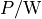
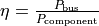
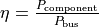
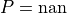
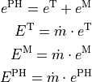
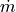
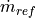
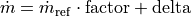

tespy.connections module¶
tespy.connections.bus module¶
Module of class Bus.
This file is part of project TESPy (github.com/oemof/tespy). It’s copyrighted by the contributors recorded in the version control history of the file, available from its original location tespy/connections/bus.py
SPDX-License-Identifier: MIT
- class tespy.connections.bus.Bus(label, **kwargs)[source]¶
Bases:
objectA bus is used to connect different energy flows.
- Parameters
label (str) – Label for the bus.
P (float) – Total power/heat flow specification for bus,

.printout (boolean) – Print the results of this bus to prompt with the
tespy.networks.network.Network.print_results()method. Standard value isTrue.
Example
Busses are used to connect energy flow of different components. They can also be used to introduce efficiencies of energy conversion, e.g. in motors, generator or boilers. This example takes the combustion engine example at
tespy.components.combustion.engine.CombustionEngineand adds a flue gas cooler and a circulation pump for the cooling water. Then busses for heat output, thermal input and electricity output are implemented.>>> from tespy.components import (Sink, Source, CombustionEngine, ... HeatExchanger, Merge, Splitter, Pump) >>> from tespy.connections import Connection, Ref, Bus >>> from tespy.networks import Network >>> from tespy.tools import CharLine >>> import numpy as np >>> import shutil >>> fluid_list = ['Ar', 'N2', 'O2', 'CO2', 'CH4', 'H2O'] >>> nw = Network(fluids=fluid_list, p_unit='bar', T_unit='C', ... p_range=[0.5, 10], iterinfo=False) >>> amb = Source('ambient') >>> sf = Source('fuel') >>> fg = Sink('flue gas outlet') >>> cw_in = Source('cooling water inlet') >>> sp = Splitter('cooling water splitter', num_out=2) >>> me = Merge('cooling water merge', num_in=2) >>> cw_out = Sink('cooling water outlet') >>> fgc = HeatExchanger('flue gas cooler') >>> pu = Pump('cooling water pump') >>> chp = CombustionEngine(label='internal combustion engine') >>> amb_comb = Connection(amb, 'out1', chp, 'in3') >>> sf_comb = Connection(sf, 'out1', chp, 'in4') >>> comb_fgc = Connection(chp, 'out3', fgc, 'in1') >>> fgc_fg = Connection(fgc, 'out1', fg, 'in1') >>> nw.add_conns(sf_comb, amb_comb, comb_fgc, fgc_fg) >>> cw_pu = Connection(cw_in, 'out1', pu, 'in1') >>> pu_sp = Connection(pu, 'out1', sp, 'in1') >>> sp_chp1 = Connection(sp, 'out1', chp, 'in1') >>> sp_chp2 = Connection(sp, 'out2', chp, 'in2') >>> chp1_me = Connection(chp, 'out1', me, 'in1') >>> chp2_me = Connection(chp, 'out2', me, 'in2') >>> me_fgc = Connection(me, 'out1', fgc, 'in2') >>> fgc_cw = Connection(fgc, 'out2', cw_out, 'in1') >>> nw.add_conns(cw_pu, pu_sp, sp_chp1, sp_chp2, chp1_me, chp2_me, me_fgc, ... fgc_cw) >>> chp.set_attr(pr1=0.99, lamb=1.0, ... design=['pr1'], offdesign=['zeta1']) >>> fgc.set_attr(pr1=0.999, pr2=0.98, design=['pr1', 'pr2'], ... offdesign=['zeta1', 'zeta2', 'kA_char']) >>> pu.set_attr(eta_s=0.8, design=['eta_s'], offdesign=['eta_s_char']) >>> amb_comb.set_attr(p=5, T=30, fluid={'Ar': 0.0129, 'N2': 0.7553, ... 'H2O': 0, 'CH4': 0, 'CO2': 0.0004, 'O2': 0.2314}) >>> sf_comb.set_attr(m0=0.1, T=30, fluid={'CO2': 0, 'Ar': 0, 'N2': 0, ... 'O2': 0, 'H2O': 0, 'CH4': 1}) >>> cw_pu.set_attr(p=3, T=60, fluid={'CO2': 0, 'Ar': 0, 'N2': 0, ... 'O2': 0, 'H2O': 1, 'CH4': 0}) >>> sp_chp2.set_attr(m=Ref(sp_chp1, 1, 0))
Cooling water mass flow is calculated given the feed water temperature (90 °C). The pressure at the cooling water outlet should be identical to pressure before pump. The flue gases of the combustion engine leave the flue gas cooler at 120 °C.
>>> fgc_cw.set_attr(p=Ref(cw_pu, 1, 0), T=90) >>> fgc_fg.set_attr(T=120, design=['T'])
Now add the busses, pump and combustion engine generator will get a characteristic function for conversion efficiency. In case of the combustion engine we have to individually choose the bus parameter as there are several available (P, TI, Q1, Q2, Q). For heat exchangers or turbomachinery the bus parameter is unique. The characteristic function for the flue gas cooler is set to -1, as the heat transferred is always negative in class heat_exchanger by definition. Instead of specifying the combustion engine power output we will define the total electrical power output at the bus.
>>> load = np.array([0.2, 0.4, 0.6, 0.8, 1, 1.2]) >>> eff = np.array([0.9, 0.94, 0.97, 0.99, 1, 0.99]) * 0.98 >>> gen = CharLine(x=load, y=eff) >>> mot = CharLine(x=load, y=eff) >>> power_bus = Bus('total power output', P=-10e6) >>> heat_bus = Bus('total heat input') >>> fuel_bus = Bus('thermal input')
You can check, if the bus value is set or not identically to connections. Unsetting is possible using
np.nanorNone. For demonstration we will specify a value for the heat bus and unset it again.>>> heat_bus.P.is_set False >>> heat_bus.set_attr(P=-1e5) >>> heat_bus.P.is_set True >>> heat_bus.set_attr(P=None) >>> heat_bus.P.is_set False
>>> power_bus.add_comps({'comp': chp, 'char': gen, 'param': 'P'}, ... {'comp': pu, 'char': mot, 'base': 'bus'}) >>> heat_bus.add_comps({'comp': chp, 'param': 'Q', 'char': -1}, ... {'comp': fgc, 'char': -1}) >>> fuel_bus.add_comps({'comp': chp, 'param': 'TI'}, ... {'comp': pu, 'char': mot}) >>> nw.add_busses(power_bus, heat_bus, fuel_bus) >>> mode = 'design' >>> nw.solve(mode=mode) >>> nw.save('tmp')
The heat bus characteristic for the combustion engine and the flue gas cooler have automatically been transformed into an array. The total heat output can be seen on both, the heat bus and in the enthalpy rise of the cooling water in the combustion engine and the flue gas cooler. Therefore these values must be identical.
>>> heat_bus.comps.loc[fgc]['char'].x array([0., 3.]) >>> heat_bus.comps.loc[fgc]['char'].y array([-1., -1.]) >>> round(chp.ti.val, 0) 25819387.0 >>> round(chp.Q1.val + chp.Q2.val, 0) -8899014.0 >>> round(fgc_cw.m.val_SI * (fgc_cw.h.val_SI - pu_sp.h.val_SI), 0) 12477089.0 >>> round(heat_bus.P.val, 0) 12477089.0 >>> round(pu.calc_bus_efficiency(power_bus), 2) 0.98 >>> power_bus.set_attr(P=-7.5e6) >>> mode = 'offdesign' >>> nw.solve(mode=mode, design_path='tmp', init_path='tmp') >>> round(chp.ti.val, 0) 21192700.0 >>> round(chp.P.val / chp.P.design, 3) 0.761 >>> round(pu.calc_bus_efficiency(power_bus), 3) 0.968 >>> shutil.rmtree('./tmp', ignore_errors=True)
- add_comps(*args)[source]¶
Add components to a bus.
- Parameters
*args (dict) – Dictionaries containing the component information to be added to the bus. The information are described below.
Note
Required Key
comp (tespy.components.component.Component): Component you want to add to the bus.
Optional Keys
param (str): Bus parameter, optional.
You do not need to provide a parameter, if the component only has one option for the bus (turbomachines, heat exchangers, combustion chamber).
For instance, you do neet do provide a parameter, if you want to add a combustion engine (‘Q’, ‘Q1’, ‘Q2’, ‘TI’, ‘P’, ‘Qloss’).
char (float/tespy.components.characteristics.characteristics): Characteristic function for this components share to the bus value, optional.
If you do not provide a characteristic line at all, TESPy assumes a constant factor of 1.
If you provide a numeric value instead of a characteristic line, TESPy takes this numeric value as a constant factor.
Provide a
tespy.tools.characteristics.CharLine, if you want the factor to follow a characteristic line.
P_ref (float): Energy flow specification for reference case, , optional.
base (str): Base value for characteristic line and efficiency calculation. The base can either be
'component'(default) or'bus'.In case you choose
'component', the characteristic line input will follow the value of the component’s bus function and the efficiency definition is
.In case you choose
'bus', the characteristic line input will follow the bus value of the component and the efficiency definition is
.
- get_attr(key)[source]¶
Get the value of a busses attribute.
- Parameters
key (str) – The attribute you want to retrieve.
- Returns
Specified attribute.
- Return type
out
- set_attr(**kwargs)[source]¶
Set, reset or unset attributes of a bus object.
- Parameters
label (str) – Label for the bus.
P (float) – Total power/heat flow specification for bus, .
printout (boolean) – Print the results of this bus to prompt with the
tespy.networks.network.Network.print_results()method. Standard value isTrue.
Note
Specify

, if you want to unset the value of P.
tespy.connections.connection module¶
Module of class Connection and class Ref.
This file is part of project TESPy (github.com/oemof/tespy). It’s copyrighted by the contributors recorded in the version control history of the file, available from its original location tespy/connections/connection.py
SPDX-License-Identifier: MIT
- class tespy.connections.connection.Connection(comp1, outlet_id, comp2, inlet_id, label=None, **kwargs)[source]¶
Bases:
objectClass connection is the container for fluid properties between components.
- Parameters
m (float, tespy.connections.connection.Ref) – Mass flow specification.
m0 (float) – Starting value specification for mass flow.
p (float, tespy.connections.connection.Ref) – Pressure specification.
p0 (float) – Starting value specification for pressure.
h (float, tespy.connections.connection.Ref) – Enthalpy specification.
h0 (float) – Starting value specification for enthalpy.
fluid (dict) – Fluid compostition specification.
fluid0 (dict) – Starting value specification for fluid compostition.
fluid_balance (boolean) – Fluid balance equation specification.
x (float) – Gas phase mass fraction specification.
T (float, tespy.connections.connection.Ref) – Temperature specification.
Td_bp (float) – Temperature difference to boiling point at pressure corresponding pressure of this connection in K.
v (float) – Volumetric flow specification.
state (str) – State of the pure fluid on this connection: liquid (‘l’) or gaseous (‘g’).
design (list) – List containing design parameters (stated as string).
offdesign (list) – List containing offdesign parameters (stated as string).
design_path (str) – Path to individual design case for this connection.
local_offdesign (boolean) – Treat this connection in offdesign mode in a design calculation.
local_design (boolean) – Treat this connection in design mode in an offdesign calculation.
printout (boolean) – Include this connection in the network’s results printout.
label (str) – Label of the connection. The default value is:
'source:source_id_target:target_id'.
Note
The fluid balance parameter applies a balancing of the fluid vector on the specified conntion to 100 %. For example, you have four fluid components (a, b, c and d) in your vector, you set two of them (a and b) and want the other two (components c and d) to be a result of your calculation. If you set this parameter to True, the equation (0 = 1 - a - b - c - d) will be applied.
The specification of values for design and/or offdesign is used for automatic switch from design to offdesign calculation: All parameters given in ‘design’, e.g.
design=['T', 'p'], are unset in any offdesign calculation, parameters given in ‘offdesign’ are set for offdesign calculation.
Example
This example shows how to create connections and specify parameters. First create the required components and connect them in the next step. After that, it is possible specify parameters with the
set_attrmethod.>>> from tespy.components import Sink, Source >>> from tespy.connections import Connection, Ref >>> from tespy.tools import FluidComposition as dc_flu >>> from tespy.tools import FluidProperties as dc_prop >>> import numpy as np >>> so1 = Source('source1') >>> so2 = Source('source2') >>> si1 = Sink('sink1') >>> si2 = Sink('sink2') >>> so_si1 = Connection(so1, 'out1', si1, 'in1', label='connection 1') >>> so_si2 = Connection(so2, 'out1', si2, 'in1') >>> so_si1.label 'connection 1' >>> so_si2.label 'source2:out1_sink2:in1'
There are different ways of setting parameters on connections: Specify
a numeric value (for attributes mass flow, pressure and enthalpy)
a numeric starting value (for attributes mass flow, pressure and enthalpy)
a dictionary (for attributes fluid and fluid0)
a boolean value (for attributes fluid_balance, local_design, local_offdesign).
a referenced value (mass flow, pressure, temperature, enthalpy).
numpy.nan or None (unsetting a value).
a string (for attributes design_path and state).
a list (for attributes design and offdesign).
>>> so_si1.set_attr(v=0.012, m0=10, p=5, h=400, fluid={'H2O': 1, 'N2': 0}) >>> so_si2.set_attr(m=Ref(so_si1, 2, -5), h0=700, T=200, ... fluid={'N2': 1}, fluid_balance=True, ... design=['T'], offdesign=['m', 'v'])
The set_attr method automatically converts your input in data_container information.
>>> type(so_si1.v) <class 'tespy.tools.data_containers.FluidProperties'> >>> type(so_si1.fluid) <class 'tespy.tools.data_containers.FluidComposition'>
If you want get a spcific value use the logic: connection.property.*. Aditionally, it is possible to use the
get_attrmethod.>>> so_si1.m.val0 10 >>> so_si1.m.val_set False >>> so_si1.m.get_attr('val_set') False >>> type(so_si2.m.ref) <class 'tespy.connections.connection.Ref'> >>> so_si2.fluid.get_attr('balance') True >>> so_si2.m.ref.get_attr('delta') -5 >>> so_si2.m.ref_set True >>> type(so_si2.m.ref.get_attr('obj')) <class 'tespy.connections.connection.Connection'>
Unset the specified temperature and specify temperature difference to boiling point instead.
>>> so_si2.T.val_set True >>> so_si2.set_attr(Td_bp=5, T=np.nan) >>> so_si2.T.val_set False >>> so_si2.Td_bp.val 5 >>> so_si2.set_attr(Td_bp=None) >>> so_si2.Td_bp.val_set False
Specify the state keyword: The fluid will be forced to liquid or gaseous state in this case.
>>> so_si2.set_attr(state='l') >>> so_si2.state.is_set True >>> so_si2.set_attr(state=np.nan) >>> so_si2.state.is_set False >>> so_si2.set_attr(state='g') >>> so_si2.state.is_set True >>> so_si2.set_attr(state=None) >>> so_si2.state.is_set False
- static attr()[source]¶
Return available attributes of a connection.
- Returns
out – List of available attributes of a connection.
- Return type
list
- get_attr(key)[source]¶
Get the value of a connection’s attribute.
- Parameters
key (str) – The attribute you want to retrieve.
- Returns
Specified attribute.
- Return type
out
- get_flow()[source]¶
Return the SI-values for the network variables.
- Returns
out – List of mass flow and fluid property information.
- Return type
list
- get_physical_exergy(p0, T0)[source]¶
Get the value of a connection’s specific physical exergy. Calcute physical exergy of connection
- Parameters
p0 (float) – Ambient pressure p0 / Pa.
T0 (float) – Ambient temperature T0 / K.
Note

- set_attr(**kwargs)[source]¶
Set, reset or unset attributes of a connection.
- Parameters
m (float, tespy.connections.connection.Ref) – Mass flow specification.
m0 (float) – Starting value specification for mass flow.
p (float, tespy.connections.connection.Ref) – Pressure specification.
p0 (float) – Starting value specification for pressure.
h (float, tespy.connections.connection.Ref) – Enthalpy specification.
h0 (float) – Starting value specification for enthalpy.
fluid (dict) – Fluid compostition specification.
fluid0 (dict) – Starting value specification for fluid compostition.
fluid_balance (boolean) – Fluid balance equation specification.
x (float) – Gas phase mass fraction specification.
T (float, tespy.connections.connection.Ref) – Temperature specification.
Td_bp (float) – Temperature difference to boiling point at pressure corresponding pressure of this connection in K.
v (float) – Volumetric flow specification.
state (str) – State of the pure fluid on this connection: liquid (‘l’) or gaseous (‘g’).
design (list) – List containing design parameters (stated as string).
offdesign (list) – List containing offdesign parameters (stated as string).
design_path (str) – Path to individual design case for this connection.
local_offdesign (boolean) – Treat this connection in offdesign mode in a design calculation.
local_design (boolean) – Treat this connection in design mode in an offdesign calculation.
printout (boolean) – Include this connection in the network’s results printout.
Note
The fluid balance parameter applies a balancing of the fluid vector on the specified conntion to 100 %. For example, you have four fluid components (a, b, c and d) in your vector, you set two of them (a and b) and want the other two (components c and d) to be a result of your calculation. If you set this parameter to True, the equation (0 = 1 - a - b - c - d) will be applied.
The specification of values for design and/or offdesign is used for automatic switch from design to offdesign calculation: All parameters given in ‘design’, e.g.
design=['T', 'p'], are unset in any offdesign calculation, parameters given in ‘offdesign’ are set for offdesign calculation.The property state is applied on pure fluids only. If you specify the desired state of the fluid at a connection the convergence check will adjust the enthalpy values of that connection for the first iterations in order to meet the state requirement.
- class tespy.connections.connection.Ref(ref_obj, factor, delta)[source]¶
Bases:
objectA bus is used to connect different energy flows.
For example, reference the mass flow of one connection

to another mass flow
:
- Parameters
obj (tespy.connections.connection.Connection) – Connection to be referenced.
factor (float) – Factor to multiply specified property with.
delta (float) – Delta to add after multiplication.